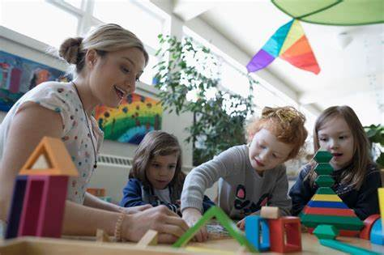

Dedicated Child and Youth Care Practitioner committed to fostering inclusive, supportive environments where young people can thrive.
Learn More About MeMy name is Mavis Danso and I am a Child and Youth Care Practitioner (CYCP), currently completing my final semester of study. My professional journey is driven by a deep passion for supporting young people, particularly those who have experienced trauma, displacement, and systemic oppression.
I aspire to make a meaningful difference in the lives of children and youth facing adversity. I am committed to principles of social justice and aim to contribute positively within school, community program, and residential settings. My goal is to help create environments where young people feel inherently safe, valued, and empowered to reach their fullest potential.
My dedication stems from the belief that every young person deserves to be seen, heard, and treated with dignity. I recognize the profound impact that adversity and systemic barriers can have, and I am motivated to be an agent of change, fostering resilience and well-being in the individuals I work with.
My practice is grounded in a set of core beliefs that guide my interactions and interventions. I believe strongly that youth deserve attention, validation, and meaningful participation in decisions affecting them.
I view each young person as a unique individual possessing inherent strengths, potential, and aspirations. Treating every interaction with dignity and respect is paramount.
My work is intentionally based on anti-oppressive and anti-racist principles, coupled with a deep respect for diversity. I acknowledge the pervasive influence of power structures and marginalization on vulnerable children and families. I actively strive to dismantle these barriers through advocacy, ongoing education, and culturally responsive practice.
I am committed to developing and implementing trauma-informed care practices with humility. Understanding the impact of trauma is crucial for creating effective support mechanisms that promote healing and resilience. As Bargeman, Smith, & Wekerle (2021) suggest, this requires patience, consistency, and a focus on safety and empowerment.
I believe in focusing on the strengths and capabilities of young people, rather than solely on their challenges. This approach empowers them, builds self-esteem, and fosters a sense of agency in their own lives.
My practical experience has provided me with invaluable opportunities to apply my knowledge and skills in real-world settings, working directly with children, youth, and families.
My approach is fundamentally child-centered, recognizing that children and youth are the experts in their own lives. This means prioritizing their perspectives, fostering their autonomy, and creating environments where they feel safe to explore, express, and grow.
Inspired by principles of child-centered play therapy, I strive to follow the child's lead in interactions and activities. This means observing their interests, validating their choices, and allowing them to guide the direction of play or conversation. It builds trust and empowers the child.
Recognizing that young people often communicate best through non-verbal means (Bendall et al., 2021), I incorporate expressive arts like journaling, drawing, movement, and therapeutic play. These methods provide safe outlets for emotional expression, processing experiences, and exploring identity.
A core tenet of my practice is establishing physically and emotionally safe spaces. This involves setting predictable routines, maintaining clear but gentle boundaries, actively listening without judgment, and affirming the child's feelings and experiences. Safety is the foundation for therapeutic work and growth.
Actively listening to understand the child's perspective and reflecting their feelings back to them ("It sounds like you're feeling frustrated right now") helps them feel heard and understood. Validation normalizes their emotional experience and strengthens the therapeutic relationship.
My research and practice emphasize culturally responsive care, especially for displaced or marginalized youth. This involves understanding the intersection of identity, culture, and mental health, respecting diverse backgrounds, and adapting interventions to be culturally relevant and affirming.
Child-centered practice extends to advocating for the child's needs within larger systems (school, community). It also involves empowering children and youth by helping them develop self-advocacy skills, understand their rights, and participate actively in decisions affecting them.
Insights from 'Ways to Play: Child-Centered Play': The video reinforces the importance of non-directive approaches, allowing children the space to process their world through play. Key takeaways include the power of observation, reflecting emotions, setting limits gently without criticism, and trusting the child's innate capacity for growth and healing when provided with a supportive environment. These principles directly inform my hands-on work.
As a CYCP, it's crucial to recognize situations that compromise a child's sense of safety, including armed conflict, displacement, domestic violence, intergenerational trauma, and systemic oppression. These disruptions are not just background noise; they are formative experiences shaping their worldview. The loss of a home due to war or fleeing unsafe family conditions profoundly affects a child's emotional, psychological, and developmental well-being (Bonta & Andrews, 2023).
Conflict's impact varies with a child's developmental stage, often manifesting as intense fear, separation anxiety, sleep disturbances, and difficulty concentrating. Their bodies can remain in a heightened state of alertness, making self-regulation challenging. Unresolved conflict trauma can lead to long-term issues like post-traumatic stress disorder (PTSD), developmental delays, emotional numbness, depression, and difficulty forming healthy attachments (Baglivio & Wolff, 2021). Children might internalize blame and guilt, negatively impacting self-worth. Without appropriate support, this trauma can carry into adulthood.
My strategy is rooted in a trauma-informed and strengths-based approach. Establishing safety and predictability is key: maintaining consistent routines, being emotionally available, and offering choices empower the child. I utilize sensory regulation strategies like breathing exercises, grounding activities, and access to calm-down spaces to support emotional regulation (Leckning et al., 2023). Building authentic relationships involves validating their stories and reminding them of their resilience. I also help children reconnect with peers and establish trust, fostering supportive networks.
Children displaced by conflict or natural disasters often face significant emotional distress, identity loss, and cultural disconnection (Gkintoni, Boutsinas, & Kourkoutas, 2022). Torn from familiar surroundings, they are thrust into environments that can feel culturally alien. This displacement manifests as grief, compounded by struggles with new languages, customs, and social norms. The loss of belonging makes forming new relationships difficult, highlighting the importance of listening to their experiences as mandated by UNCRC Article 12.
Supporting displaced youth involves creating culturally safe spaces where they feel heard, understood, and valued, allowing them to begin healing. Acknowledging and celebrating their cultural backgrounds is vital. For instance, developing initiatives like a visual heritage wall in a community center allows children to express their cultural identity through art and artifacts (Rider et al., 2021). This fosters pride, helps them reconnect with their roots, and educates others.
Stronger policies are needed to guarantee displaced youth access to culturally competent mental health services and educational support tailored to newcomer/refugee needs (Chipalo, 2021). Many have experienced significant trauma, making specialized services essential. Funding should support programs incorporating diverse cultural perspectives in education, improving academic outcomes and enhancing social adaptation, ensuring they have equal opportunities to thrive.
Systemic discrimination within the judicial system disproportionately impacts Black and Indigenous youth, leading to their overrepresentation (Bargeman, Smith, & Wekerle, 2021). Racial profiling, stereotypes, and biases influence arrest rates, sentencing, and access to diversion programs. These youth often face harsher sentences and are less likely to benefit from rehabilitative alternatives. This pattern of over-policing creates barriers to justice and equity, with harmful short-term and long-term consequences, potentially leading to continued system involvement (Bendall et al., 2021). Addressing this requires reforms, decolonization of justice practices, and understanding the socio-political factors contributing to criminalization.
I advocate for a restorative justice approach emphasizing accountability, healing, and reconciliation, providing youth opportunities to take responsibility and understand their impact. Engaging in dialogues with victims and the community is crucial. Primarily important is ensuring youth understand their legal rights and can navigate the justice system fairly (Bonta & Andrews, 2023). For example, accompanying an individual to court, helping them prepare, and articulating their experiences can reduce fear and empower them within the judicial process.
Staying informed about justice equity is vital. Attending workshops on racial profiling and the experiences of marginalized youth, and following organizations like Justice for Children and Youth, provides essential knowledge. Continuous learning allows me to better support youth and advocate for systemic change to dismantle discriminatory structures within the justice system (Baglivio & Wolff, 2021).
The overrepresentation of Indigenous children in care reflects a legacy of systemic harm rooted in colonialism, which separated children from their families, cultures, and communities (Hoover & Bostic, 2021). The residential school system and ongoing issues in the child welfare system exemplify policies causing intergenerational trauma. Challenging anti-Indigenous racism is a moral imperative for reconciliation and justice.
My understanding is shaped by the Truth and Reconciliation Commission and teachings from Indigenous Elders, highlighting the need for systemic change in education, child welfare, and cultural revitalization. This guides my practice towards culturally sensitive and restorative approaches. I recognize the importance of cultural continuity – ensuring Indigenous children maintain connections to their language, practices, and community – and the significance of land-based healing, which emphasizes the therapeutic connection to ancestral lands and traditional knowledge (McPherson et al., 2021).
I strive to integrate cultural revitalization into my practice. This includes consistently incorporating land acknowledgments, recognizing the traditional territories and their stewards. I prioritize using Indigenous-authored children’s books in educational settings to offer authentic perspectives (Roach et al., 2023). Building relationships with local Indigenous organizations is crucial for accessing resources, collaborating effectively, and continuously learning about the historical and contemporary challenges faced by Indigenous communities, thereby creating culturally aware and supportive environments.
Staying aware of global issues affecting youth, particularly in politically unstable regions, is essential. Connecting via social media and news briefings reveals the realities children face in conflict zones – witnessing devastation that threatens their safety and undermines prospects for education and mental health (Hoffmann et al., 2021). This awareness informs my understanding of the psychological challenges faced by these youth and strengthens my commitment to amplifying their voices.
Supporting youth impacted by political instability involves ensuring their narratives are heard. Listening validatingly creates agency and empowerment. Providing immediate emotional support and safe environments allows them to process trauma. Advocating for their rights in educational settings ensures access to necessary resources. Digital storytelling, using photos, videos, and narratives, can be a powerful tool for self-expression and giving meaning to their experiences (Mann et al., 2021). This empowers youth, fosters community awareness, and contributes to a global dialogue.
I am deeply committed to challenging gender-based violence by creating safe spaces where young people feel comfortable disclosing and processing their experiences, breaking the silence and isolation often associated with trauma. Empowering youth to reclaim their voices and recognize their inherent value is paramount. Consent education is integral, ensuring youth understand their rights, boundaries, and the importance of mutual respect in relationships, emphasizing equity for all genders (McGuire, Steele, & Singh, 2021).
Supporting youth requires a compassionate, trauma-informed approach. Creating an environment for validation without judgment is key. Making appropriate referrals to trusted services like the Assaulted Women's Helpline or local organizations specializing in sexual assault and intimate partner violence is crucial (Paulus et al., 2021). Facilitating group sessions on healthy relationships—discussing boundaries, mutual respect, communication, and trust—educates and offers solidarity, reminding youth they are not alone.
I collaborate with community organizations like YWCA Toronto, METRAC, and Love146. These partnerships are essential for ensuring young people have access to a comprehensive network of care and support tailored to their needs.
Navigating the challenges faced by youth affected by conflict, displacement, trauma, and systemic issues requires effective tools and support networks. The following resources offer valuable guidance and programs:
Baglivio, M. T., & Wolff, K. T. (2021). Positive childhood experiences (PCE): Cumulative resiliency in the face of adverse childhood experiences. Youth violence and juvenile justice, 19(2), 139-162.
Bargeman, M., Smith, S., & Wekerle, C. (2021). Trauma-informed care as a rights-based “standard of care”: A critical review. Child Abuse & Neglect, 119, 104762.
Bendall, S., Eastwood, O., Cox, G., Farrelly-Rosch, A., Nicoll, H., Peters, W., ... & Scanlan, F. (2021). A systematic review and synthesis of trauma-informed care within outpatient and counseling health settings for young people. Child maltreatment, 26(3), 313-324.
Bonta, J., & Andrews, D. A. (2023). The psychology of criminal conduct. Routledge.
Chipalo, E. (2021). Is trauma focused-cognitive behavioral therapy (TF-CBT) effective in reducing trauma symptoms among traumatized refugee children? A systematic review. Journal of child & adolescent trauma, 14(4), 545-558.
Gkintoni, E., Boutsinas, B., & Kourkoutas, E. (2022). Developmental trauma and neurocognition in young adults: A systematic review. EDULEARN22 Proceedings, 5656-5662.
Hoffmann, J. A., Pergjika, A., Konicek, C. E., & Reynolds, S. L. (2021). Pharmacologic management of acute agitation in youth in the emergency department. Pediatric emergency care, 37(8), 417-422.
Hoover, S., & Bostic, J. (2021). Schools as a vital component of the child and adolescent mental health system. Psychiatric services, 72(1), 37-48.
Leckning, B., Condon, J. R., Das, S. K., He, V., Hirvonen, T., & Guthridge, S. (2023). Mental health-related hospitalisations associated with patterns of child protection and youth justice involvement during adolescence: a retrospective cohort study using linked administrative data from the Northern Territory of Australia. Children and Youth Services Review, 145, 106771.
Mann, M., McMillan, J. E., Silver, E. J., & Stein, R. E. (2021). Children and adolescents with disabilities and exposure to disasters, terrorism, and the COVID-19 pandemic: A scoping review. Current psychiatry reports, 23, 1-12.
McGuire, A., Steele, R. G., & Singh, A. (2021). Systematic review on the application of trauma-focused cognitive behavioral therapy (TF-CBT) for preschool-aged children. Clinical Child and Family Psychology Review, 24(1), 20-37.
McPherson, L., Vosz, M., Gatwiri, K., Parmenter, N., Macnamara, N., Mitchell, J., & Tucci, J. (2021). What does research tell us about young people’s participation in decision making in residential care? A systematic scoping review. Children and Youth Services Review, 122, 105899.
Paulus, F. W., Ohmann, S., Möhler, E., Plener, P., & Popow, C. (2021). Emotional dysregulation in children and adolescents with psychiatric disorders. A narrative review. Frontiers in psychiatry, 12, 628252.
Rider, E. A., Ansari, E., Varrin, P. H., & Sparrow, J. (2021). Mental health and wellbeing of children and adolescents during the covid-19 pandemic. bmj, 374.
Roach, E. L., Haft, S. L., Huang, J., & Zhou, Q. (2023). Systematic review: The association between race-related stress and trauma and emotion dysregulation in youth of color. Journal of the American Academy of Child & Adolescent Psychiatry, 62(2), 190-207.
I am eager to apply my skills and passion to a challenging and rewarding Behavioral Educational Assistant or CYCP role. Please feel free to reach out to discuss potential opportunities or collaborations.
Send Email